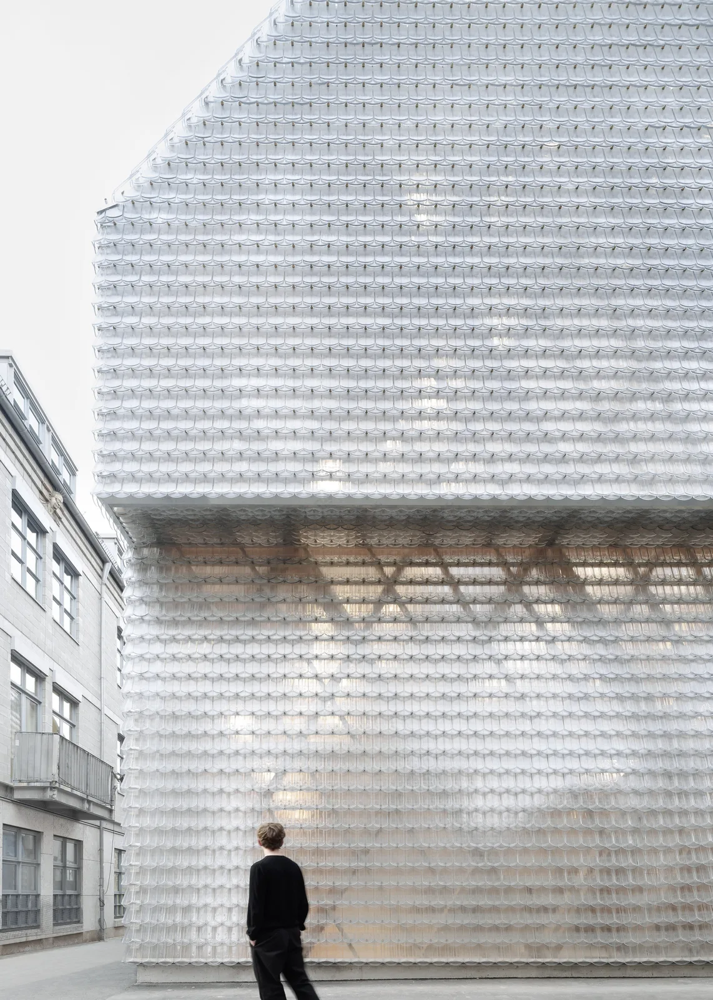
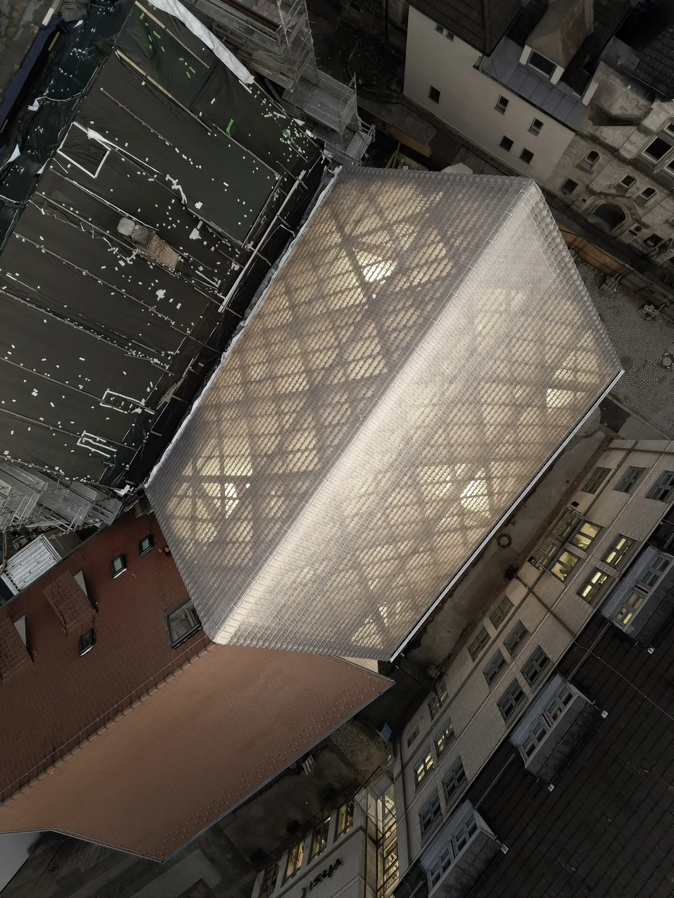
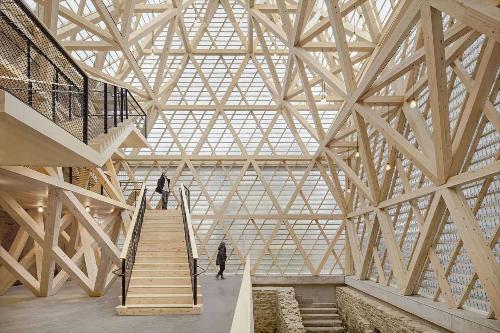
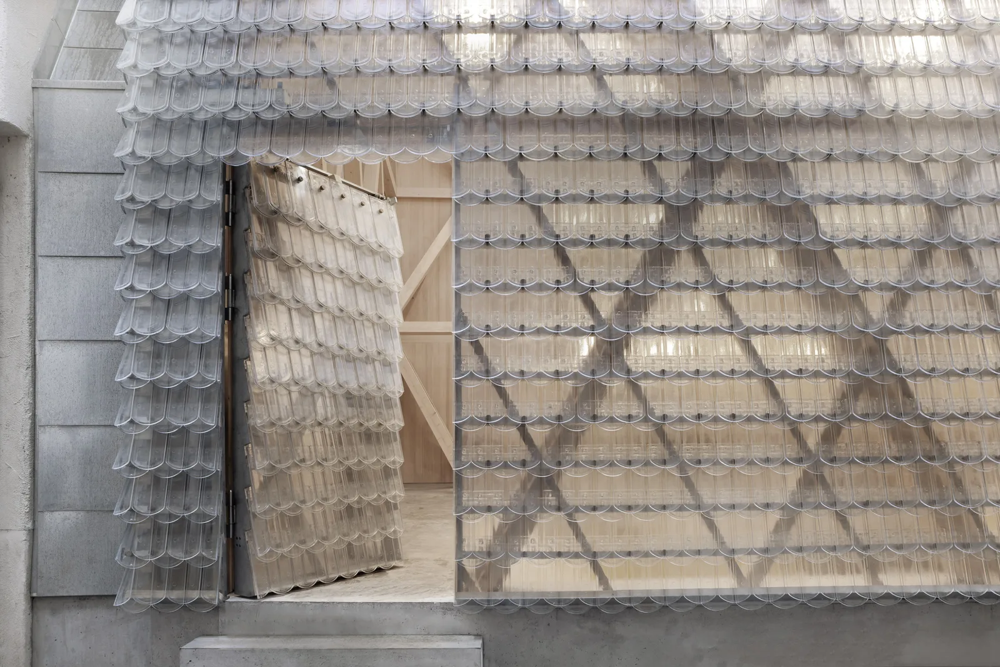
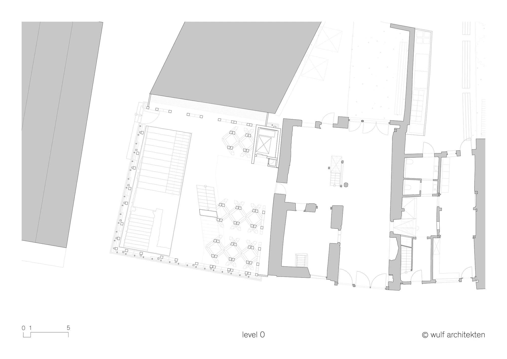
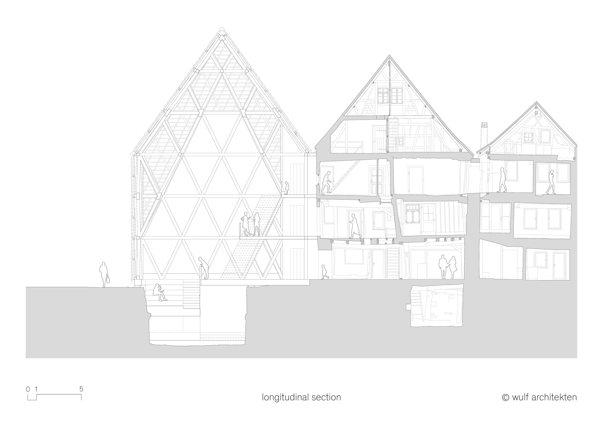
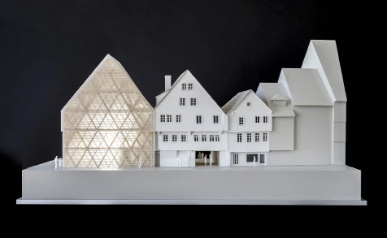

Museum extension · 2025
Historical Oberamteistraße Museum
wulf architekten
Reutlingen, Germany
The new corner building forms part of a museum in which the old houses are themselves exhibits. It provides access to the historic fabric and room for small events, connecting architectural history with public display.
The timber frame physically braces the neighbouring historic houses and recalls the volume of a demolished predecessor. Cast-glass tiles cover both walls and roof, making the structure alternately visible and blurred. Screw connections allow the new construction to be dismantled.


Relevant connections
SHOW
The museum presents the history of building and living through its historic houses and public events.
Images and drawings / 07











